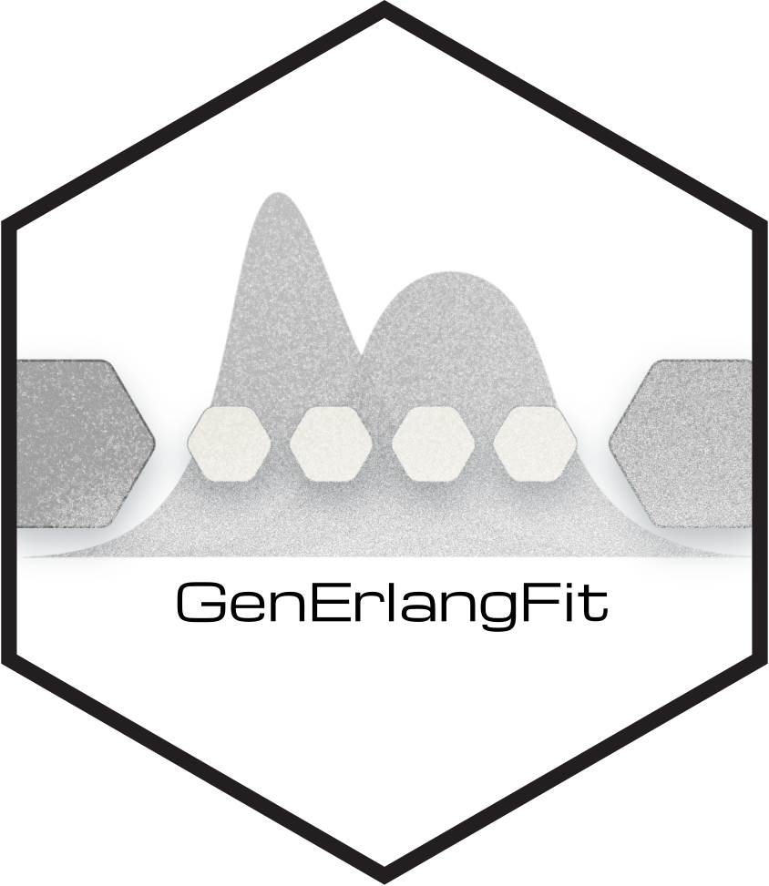
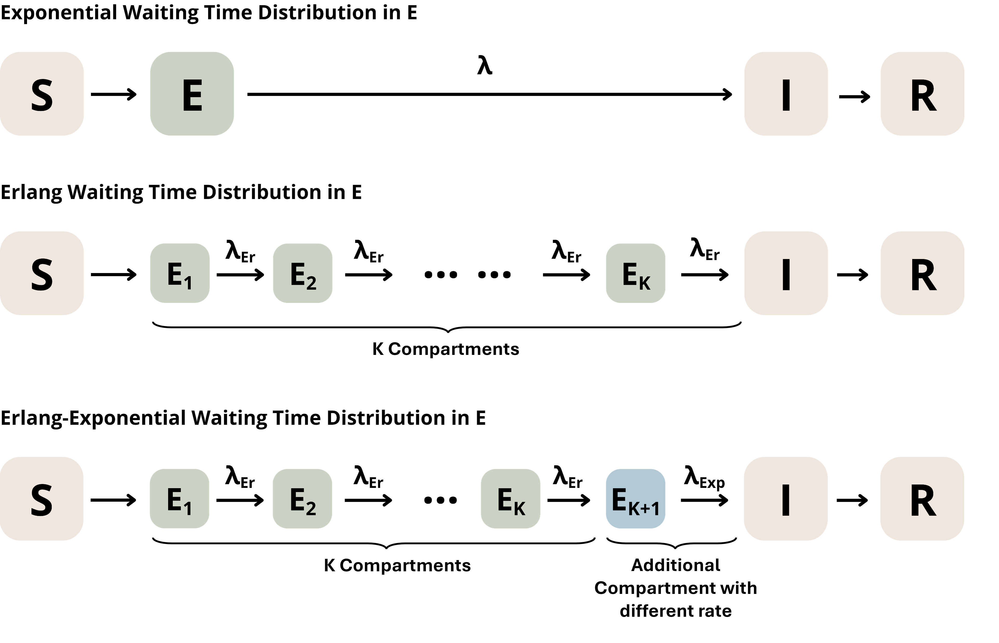

What is the Linear Chain Trick?
LinearChainTrick.RmdThe Problem with Exponential Waiting Times
Compartmental models are widely used in epidemiology to describe how individuals move through disease states—such as Susceptible (S), Exposed (E), Infectious (I), and Recovered (R). These models are typically formulated as systems of ordinary differential equations (ODEs) with constant transition rates between compartments.
Despite their widespread use, a fundamental limitation of these models is the assumption of constant transition rates between compartments, which implicitly imposes exponentially distributed waiting times within each state. The exponential distribution has a unique “memoryless” property: the probability of leaving a compartment is the same whether an individual just arrived or has been there for a long time. This results in a distribution where many individuals have very short waiting times, others have extremely long durations, and relatively few are near the mean.
For many biological processes, this is unrealistic. Incubation periods, infectious durations, and recovery times often cluster around a characteristic value rather than exhibiting the high variance of an exponential distribution.
The Linear Chain Trick
The Linear Chain Trick (LCT) is a technique for constructing compartmental ODE models with more realistic waiting time distributions while preserving the linear ODE structure. It exploits the fact that an Erlang(K, λEr) distributed waiting time is mathematically equivalent to the sum of K independent exponential waiting times, each with rate λEr.
This allows a single compartment to be partitioned into K sub-compartments, where each sub-compartment retains exponentially distributed waiting times, keeping the ODEs linear and straightforward to solve. With only two parameters (i.e., the number of sub-compartments (K) and the transition rate (λEr)), Erlang distributions can approximate a wide range of shapes. As K increases, the distribution becomes more peaked around the mean, better capturing the characteristic durations observed in real disease processes and enabling close fits to many empirical distributions.
Visual Comparison
The figure below illustrates how the Linear Chain Trick can be incorporated into compartmental models. Using the canonical SEIR model from epidemiology as an example, we compare the standard constant-rate formulation with two alternatives that incorporate non-exponential waiting time distributions in E (the latent period):

The third row shows an Erlang-Exponential distribution, which is one example of extending beyond standard Erlang distributions, as discussed below.
Erlang-Exponential Distributions
While the standard Linear Chain Trick assumes equal transition rates between all sub-compartments, there is no mathematical requirement for this restriction. Allowing different rates between compartments, or entirely different compartmental structures, opens up a larger family of phase-type distributions, including hypoexponential, hyper-Erlang, and Coxian distributions (see Hurtado & Kirosingh 2019 for details).
This tool supports one such extension: Erlang-Exponential distributions, which add one additional compartment with a different rate (λExp) after the K Erlang sub-compartments. This three-parameter distribution can reproduce more right-skewed empirical distributions compared to standard Erlang distributions, providing additional flexibility when fitting to real-world data.
GenErlangFit Package
Given empirical waiting time data, GenErlangFit fits
Erlang and Erlang-Exponential distributions across a range of K values
using maximum likelihood estimation, identifying the optimal number of
sub-compartments and corresponding rate parameter(s) for use in ODE
models.
References
Hurtado, P.J. & Kirosingh, A.S. (2019). Generalizations of the ‘Linear Chain Trick’: incorporating more flexible dwell time distributions into mean field ODE models. Journal of Mathematical Biology, 79, 1831–1883. https://doi.org/10.1007/s00285-019-01412-w
See Also
- Getting Started - Basic usage of GenErlangFit
- Technical Details - Fitting algorithms and assumptions